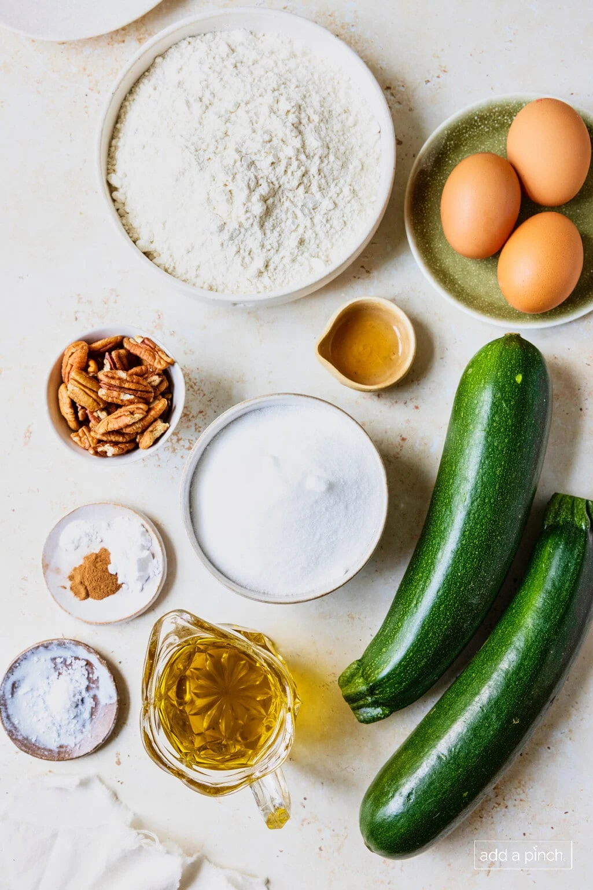
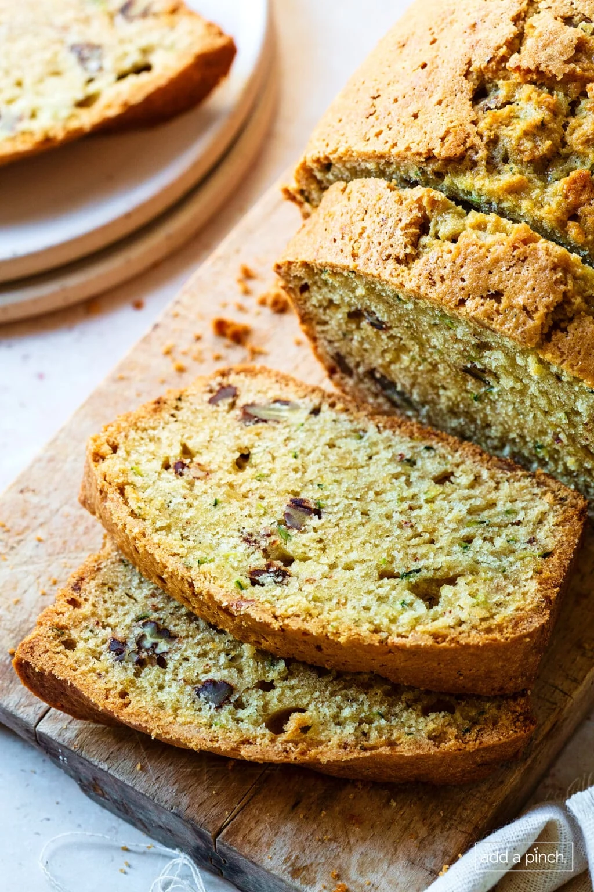

Homemade Zucchini
Bread Recipe
This Homemade Zucchini Bread is an easy, failproof quick bread recipe that is always a crowd favorite. Filled with grated zucchini this bread is moist and delicious.

Prep. Time
10 minutes
Cook Time
1 hour
Total Time
1 hour 10 minutes
Servings
24 Loafs

Ingredients
- 3 large eggs, separated
- 1 cup oil, neutral flavored for baking
- 2 cups sugar, granulated or brown sugar
- 2 cups zucchini, grated (unpeeled) – about 2 medium zucchini
- 1 teaspoon vanilla extract
- 3 cups all-purpose flour
- 1 teaspoon kosher salt
- 1 teaspoon ground cinnamon
- 1 teaspoon baking soda
- 1/4 teaspoon baking powder
- 1/2 cup pecans, chocolate chips or dried fruit
Procedures
- Preheat the oven, prepare the loaf pans, beat the egg whites until stiff and set aside. Grate the zucchini with a box grater and set aside.
- Add the oil, sugar, zucchini, vanilla extract, and egg yolks in a large mixing bowl. Stir to combine.
- Add in the flour, salt, cinnamon, baking soda, and baking powder and stir to combine.
- Add the chopped nuts or other mix-ins and stir to combine.
- Fold the egg whites into the batter.
- Pour the batter into prepared loaf pans and bake until golden brown and a skewer inserted in the center of the bread comes out with some crumbs attached but no batter, about an hour.
- Cool in the pans for about 10 minutes before turning out onto a wire rack to cool for at least 30 minutes before slicing.

Nutritions
Calories: 229kcal | Carbohydrates: 29g | Protein: 3g | Fat: 12g | Saturated Fat: 1g | Polyunsaturated Fat: 3g | Monounsaturated Fat: 7g | Trans Fat: 0.04g | Cholesterol: 23mg | Sodium: 153mg | Potassium: 66mg | Fiber: 1g | Sugar: 17g | Vitamin A: 56IU | Vitamin C: 2mg | Calcium: 12mg | Iron: 1mg